| GitHub 저장소 | https://github.com/alslxhrl7-web/blender-ai-game-assets-guide Unity 프로젝트: blender-ai-game-assets-guide/ 폴더 |
|---|---|
| 훈련과정 | 2026 대전 KNDA 게임 개발 과정 |
| 평가 과목 | Unity (게임 프로토타입 개발) |
| 훈련생 | 나민재 |
| 실행 빌드 (PC) | 02.나민재.zip — 압축을 풀고 FiveRivers_M1.exe 실행 (저장소 Builds/02_나민재/) |
| 플레이 영상 | 02_Unity_Fiveriver_M1_play.7z — 1분 53초 mp4 (저장소 Builds/02_나민재/) |
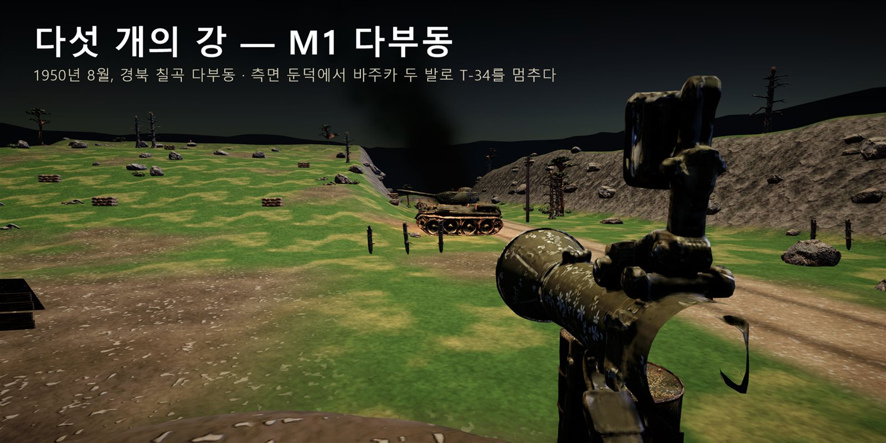
| 평가 내용 (포함 요소) | 이 문서에서 |
|---|---|
| 씬 구성 | 2-1 에셋 임포트·프리팹화 · 2-2 조명·카메라·배경 |
| 게임플레이 | 2-3 플레이어 조작 · 2-4 목표·획득·승리/실패 규칙 |
| UI | 2-5 게임 상태와 연동된 UI |
| AI 활용 개발 | 2-6 AI 코딩 도구로 스크립트 작성 · 프롬프트·수정 내용 · 오류 해결 과정 |
| 결과물 | 3 실행 빌드(PC) · 플레이 영상 · 실행 화면 |
| 포트폴리오 | 1 기획 의도 → 2 개발 과정 → 3 결과물 · 4 주요 코드 설명(주석 포함) |
「다섯 개의 강」은 한국전쟁의 이름 없는 병사들을 따라가는 1인칭 게임이다. 1스테이지 M1 다부동은 1950년 8월 경북 칠곡 다부동 전투의 하룻밤을 3분으로 압축한다. 플레이어는 신병 오석구가 되어 조명탄이 뜰 때만 보이는 적을 막고, 새벽 전에 내려오는 T-34 전차를 바주카로 멈춘다.
| 핵심 경험 | 조명탄이 뜨면 밝아지고 적도 멀리서 나를 본다. "밝을 때 쏘고, 어두울 때 움직이라." |
|---|---|
| 무기의 손맛 | M1 개런드는 8발을 다 쏘면 빈 클립이 '핑' 하고 튀어나온다. 바주카는 전차 정면에는 튕기고 옆구리 2발이라야 멈춘다. |
| 감정선 | 공세 → 정적(대답 없는 전우 최만수) → 전차 → 새벽. "점수 대신 이름이 남는다": 결과 화면은 점수 대신 날짜·전사자 이름·편지 한 줄을 보인다. |
1차 에셋(1차 평가에서 Blender 로 정리한 리소스)을 임포트해 프리팹으로 만들었다. 에디터 스크립트 M01CharacterSetup 이 재질·법선 지도·애니메이터·충돌체를 붙여 저장한다.
| 1차 에셋 | 프리팹 | 게임에서 쓰는 곳 |
|---|---|---|
| Hero_Seokgu.fbx (Idle·Walk) | Resources/Characters/Ally_Soldier · Animator, URP Lit + 법선 | 아군 분대원(김덕만·박용팔 등). 움직이면 Walk, 서 있으면 Idle |
| Env_SandbagPosition.fbx | Resources/Props/Env_SandbagPosition · 벽마다 MeshCollider | 분대원 사격 자리. 총알과 시야를 막는다 |
| Prop_M1Garand.fbx | Resources/Weapons/Prop_M1Garand | 플레이어가 3분 내내 손에 든 M1 개런드 |
AI 생성 에셋은 바르코3D(고증 이미지 → 3D)로 만들고 Blender 스크립트로 게임 크기·원점·삼각형 수를 맞춘 뒤 프리팹으로 만들었다.
| AI 생성 에셋 | Blender 정리 → Unity 프리팹 |
|---|---|
| 북한군 소총수 (Rig + 동작 4개) | 4동작(숙여 뛰기·엄폐·사격·쓰러짐)을 한 FBX 로(pack_enemy.py), 1.68 m, 8,000 tris → Characters/Enemy_Soldier. 적 AI 상태에 맞춰 동작이 바뀐다 |
| T-34-85 · GMC 트럭 · 담요를 덮은 전사자 | 8.1 m / 6.9 m / 1.85 m (clean_prop.py) → Props/T34_85 등. T-34 는 로켓 판정 상자를 모델 크기에 맞춤 |
| 무기 4종 (M1·바주카·모신나강·BAR) | 실제 길이, 중심점을 손잡이로(clean_weapon.py) → 1인칭 손 모델과 인물이 든 총 |
| 배경 소품 21종 | 아래 2-2 |
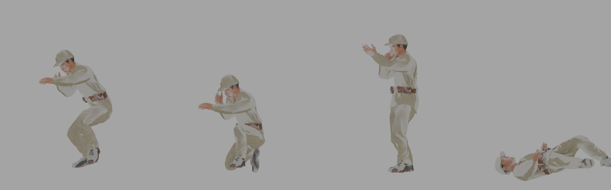
| 배경 | 다부동 능선 지형·도로·참호는 에디터 스크립트(M01GreyboxBuilder, M01RealisticBuilder)로 만들고, 배경 소품 21종을 바르코3D → Blender(clean_prop.py, 실제 크기 m) → 프리팹으로 만들어 에디터 스크립트 M01VarcoDresser 가 506개를 배치한다. 1950년 경북 산지의 민둥산에 맞춰 나무는 90그루만 둔다. |
|---|---|
| 조명 | 달밤(태양·환경광·안개를 낮춤) → 조명탄이 뜨면 방향광·환경광이 오르고 2초 오름·8초 밝음·3초 꺼짐 → 새벽 라이팅. 총구 화염·예광선·전차 화염은 점광원과 선 |
| 카메라 | 1인칭, 눈높이 서기 1.6 m / 엎드리기 0.45 m, 우클릭 조준 시 시야 0.7배, 피격·포격 때 흔들림 |
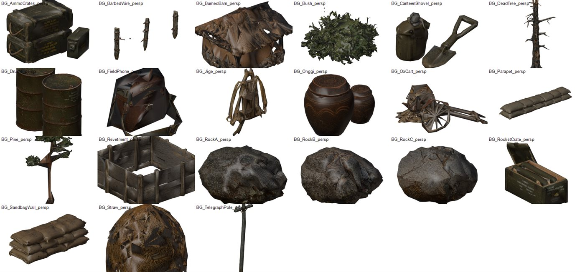
| 구역 | 배치 |
|---|---|
| 참호 (플레이어 시작) | 흉벽 모래주머니, 모래주머니 더미 8, 탄약상자 3(보충 지점), 전화기, 수통·야전삽 |
| 전방 경사면 | 바위·모래주머니 엄폐 12곳, 관목, 철조망 6 — 적이 숨는 곳 |
| 계곡 도로 · 측면 둔덕 | 전봇대 3, 소달구지 / 바주카 로켓 상자, 드럼통 — 전차를 노리는 곳 |
| 원경 | 불탄 초가 헛간 2, 볏짚, 옹기, 지게 — 새벽에 보이는 마을 터 |
| 이동 | WASD · 마우스 시점 · Shift 달리기(5초) · Z 엎드리기(반동·흔들림 40% 감소) |
|---|---|
| 사격 | 좌클릭 사격 · 우클릭 조준(탄 퍼짐 1.1° → 0.25°) · R 재장전(빈 클립 2.2초, 남은 탄 있으면 3.5초) · 1 M1 / 2 바주카 |
| 상호작용 | 탄약 상자 근처에서 F 탄약 보충 |
| 무기 | M1: 몸 60 · 머리 100 피해, 0.25초 간격, 클립 6개(48발) / 바주카: 로켓 3발, 재장전 4.5초 |
구간은 시간이 아니라 조건으로 넘어간다.
| 구간 | 목표 (넘어가는 조건) | 내용 |
|---|---|---|
| 시작 | 20초 | 참호에서 조작 안내, 분대장의 규칙 설명(자막) |
| 첫 조명탄 | 정찰병 2명 처치 (놓치면 공세에 합류) | 0:20 고정 조명탄 |
| 공세 | 적 7명 모두 처치 (그 전에는 넘어가지 않는다) | 세 진입로에서 1.5초 간격, 동시에 최대 6명. 20~40초마다 조명탄 |
| 정적 | 15초 | 탄약 보충, 체력 회복 |
| T-34 | 측면 둔덕에서 전차 측면에 바주카 2발 (45초 제한) | 정면은 피해 10%. 주포 8초마다, 둔덕으로 달릴 때 기관총 |
| 새벽 · 결과 | — | 새벽 장면 20초 → 결과 화면 → 시작 화면 |
| 획득 | 탄약 상자에서 F: M1 예비 클립 보충(클립이 비어 있으면 바로 장전). 5초 동안 맞지 않으면 체력이 50까지 회복 |
|---|---|
| 승리 | 공세를 막고 T-34 를 멈춘 뒤 새벽까지 살아남는다 → 결과 화면 |
| 실패 | ① 체력 0 (적 소총 한 발 30, 기관총 10) ② T-34 가 45초 안에 멈추지 않고 실패선 도달 → 실패 화면, 3초 뒤 다시 시작(1:45 전이면 처음부터 — 두 번째부터 조작 안내 생략, 그 뒤면 측면 둔덕 앞 체크포인트부터) |
| 적 | 알아챔: 어두우면 20 m · 조명탄 아래 60 m · 총소리 45 m, 그리고 시야가 트여야 함. 0.8초 뒤 사격, 명중률 어두울 때 15% · 밝을 때 35%. 쏘고 3~5초 엄폐. 15 m 안이거나 2명 이하로 남으면 돌격 |
| 게임 상태 | UI |
|---|---|
| 체력 | 숫자 대신 체력이 줄수록 화면 가장자리가 어두워지고 숨소리가 커진다 |
| 피격 | 총알이 온 방향의 화면 가장자리가 붉어진다 |
| 탄약 | R·장전·보충 때 2초간 "M1 남은 탄 / 8 · 예비 클립" 또는 "로켓 장전 / 남은 수" |
| 상호작용 | 탄약 상자 근처에서만 "F 탄약 보충" |
| 목표 | T-34 등장 때 "측면 둔덕으로" |
| 시작 · 실패 · 결과 화면 | 시작 화면(제목, '시작' 버튼) · 실패 화면(어두워지며 "전사했습니다" / "T-34 가 실패선을 넘었습니다") · 결과 화면(날짜·장소 → 전사자 이름 → 편지 한 줄 → 제목) |
점수: 기획 의도("점수 대신 이름이 남는다")에 따라 점수·처치 수는 화면에 보이지 않고, 결과 화면이 전사자의 이름을 보여 준다. 점수는 개발 검사 기록(로그)에만 남긴다.
스크립트는 모두 AI 코딩 도구 Claude Code 에 한국어로 요청해 작성하고, Unity 배치 모드 자동 검사(M01PlayTools)로 확인한 뒤 다시 요청했다. 작업 기록은 저장소의 WORKLOG.md 에 성공·부분·실패·미확인으로 남겼다.
| 프롬프트 | 작성된 스크립트 · 수정 내용 |
|---|---|
| "인물들과 T-34 캡슐 형태로 넣어서 어떻게 진행될지 보여 줄 수 있게 초안까지 짜서 만들어" | 실패 기획서를 읽기 전에 카메라가 저절로 도는 재생물로 만듦 → 기획서를 주고 다시 요청 |
| "기획서와 인계 문서를 바탕으로 다시 만들어" | 수치 에셋 M01DemoData, 시계 M01Demo, DemoPlayer·DemoEnemy·DemoTank·DemoHud 로 나눔 |
| "1차 평가 리소스 사용해서 인물들 만들어" | M01CharacterSetup: 1차 에셋 프리팹, 법선 지도 연결. DemoBody: 모델이 판정용 캡슐을 따라감 |
| "캡슐로 되어 있는 거 모두 모델 만들어서 교체해, 적도 새로 만들어" | 바르코3D 를 연결 도구(MCP)로 조작, Blender 스크립트 clean_prop.py·pack_enemy.py, 가져오기 규칙 WeaponImportSettings |
| "내가 정한 규칙을 구현해" (기획서 첨부) | M01PlanA(수치·흐름표), M01Demo.FlowA(조건 진행), 적 AI·실패/재시작·조준·달리기·조명탄 주기, 기획서 HUD |
| "배경에 있는 것들 전부 만들고 게임 크기로 블렌더 거쳐서 넣어" | 소품 21종, clean_prop.py 에 높이 기준 크기 추가, 배치 스크립트 M01VarcoDresser |
| 오류 | 원인 분석 | 해결 |
|---|---|---|
| T-34 를 둔덕에서 쏴도 정면에만 맞아 멈추지 않음 | 전차가 진지 쪽으로 똑바로 와서 둔덕에서는 앞모습만 보임 | 도로 굽이 뒤 서쪽으로 꺾어 기어 오게 함 → 측면 2발 정지 해결 |
| 건너뛰기 키(F9)를 누르면 공세에서 멈춤 | 물러나는 적을 "남은 적"으로 세어 공세 종료 조건이 채워지지 않음 | 물러나는 적도 끝난 적으로 셈(DemoEnemy.Leaving) 해결 |
| 배치 모드에서 플레이를 확인할 수 없음 | 키보드 입력이 없음 | 시연 동선을 따라 하는 자동 조작 DemoAutoPilot, 판정은 사람과 같게 |
| 자동 검사에서 공세 중 전사 | 자동 조작이 엄폐를 못 함(게임 규칙 문제 아님) | 검사·녹화 때만 자동 조작 무적, 사망은 손 뗀 검사로 따로 확인 |
| 엄폐물 옆 관목이 공중에 뜸 | 이미 땅 높이가 들어간 위치에 땅 높이를 한 번 더 더함 | x·z 로만 땅 높이를 다시 잼 |
| 데이터를 고치면 원본 에셋이 바뀔 위험 | ScriptableObject 는 재생 중 수정이 원본에 남음 | 시작할 때 Instantiate(data) 사본에만 기획 수치를 덮어씀 |
| 실행 빌드 (PC) | 저장소 Builds/02_나민재/02.나민재.zip (Windows 64bit, 압축을 풀고 FiveRivers_M1.exe 실행) |
|---|---|
| 플레이 영상 | 저장소 Builds/02_나민재/02_Unity_Fiveriver_M1_play.7z (mp4) — 1분 53초, 소리 포함. 시작 → 첫 조명탄·공세 → T-34 측면 2발 정지 → 새벽 → 결과 화면 |
| 프로젝트 | GitHub 저장소 blender-ai-game-assets-guide/ · 씬 Assets/_Project/Scenes/Missions/M01_Dabudong.unity · 스크립트 Assets/_Project/Scripts/ |
| 자동 검사 | 처음부터 끝까지 성공 (적 9/9 처치, T-34 정면 1·측면 2로 정지, 170초에 결과 화면, 184초에 끝) · 조작하지 않으면 45초에 전사 → 실패 화면 성공 |
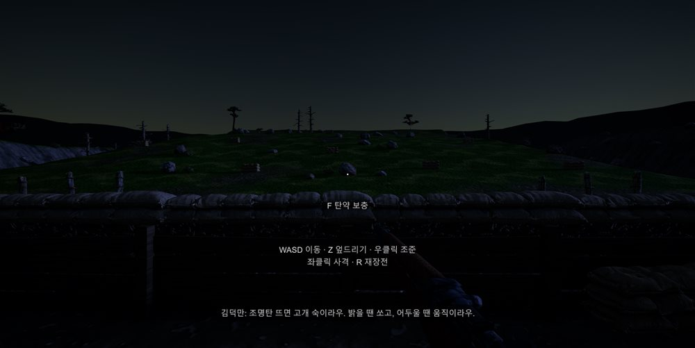
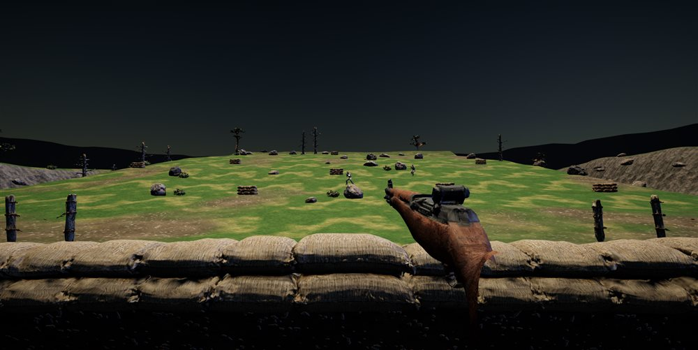
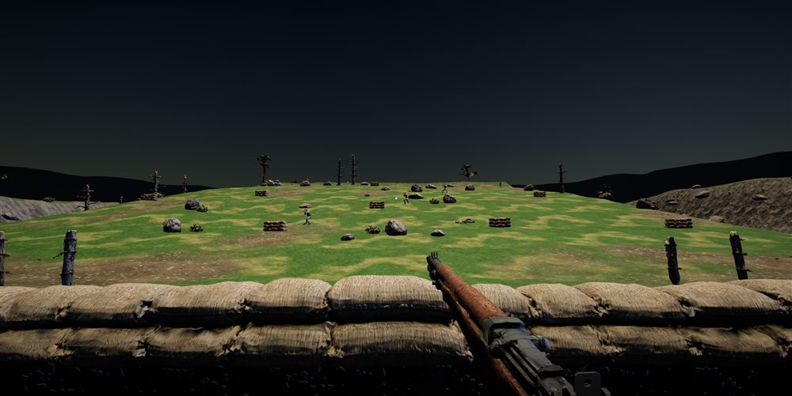
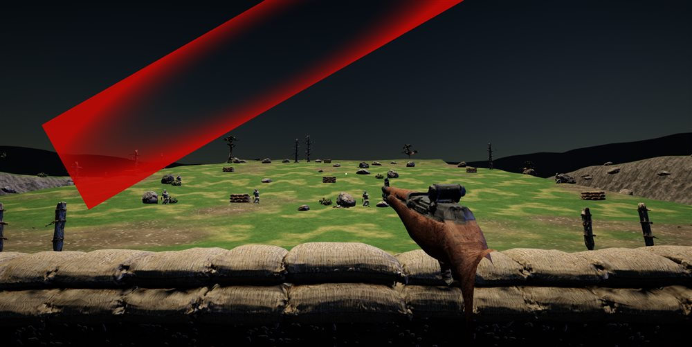
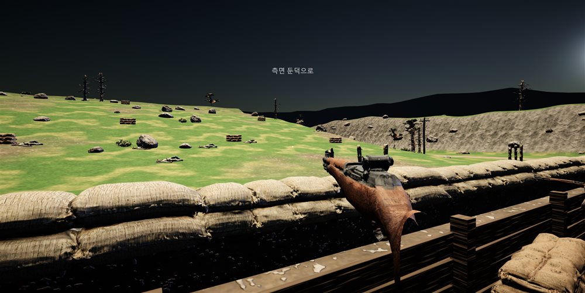
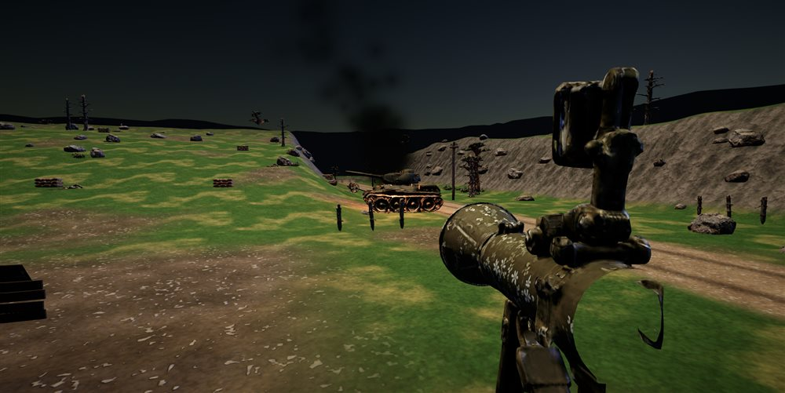
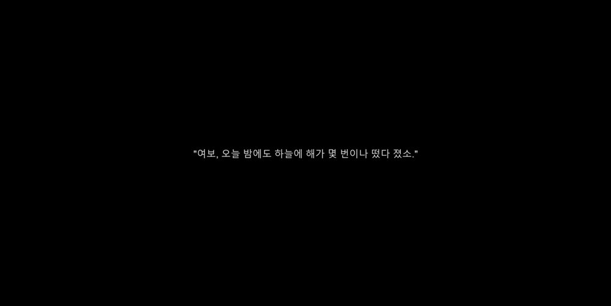
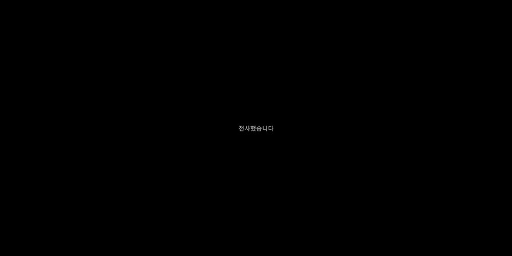
스크립트 구성: M01PlanA(기획 수치·흐름표) · M01Demo(시계·조건·실패/재시작) · DemoPlayer(조작·체력) · DemoEnemy(적 AI) · DemoTank(T-34) · DemoStage(조명탄·공세) · DemoHud(UI).
M01Demo.FlowA// 조건이 먼저 채워지면 다음 구간으로 건너뛰고, 공세가 남았으면 정적으로 넘어가지 않고 기다린다.
void FlowA()
{
switch (Beat.id)
{
case "FIRST_FLARE": // 정찰병 처치 → 공세
if (Stage.WaveDone("FIRST_FLARE") && Clock > 23f) Clock = Mathf.Max(Clock, 40f);
break;
case "ASSAULT": // 7명 처치 → 정적
if (Stage.AllEnemiesDown && Stage.WavesSpawned) Clock = Mathf.Max(Clock, 90f);
else if (Clock >= 89.95f) Clock = 89.95f; // 남은 적이 있으면 기다린다
break;
case "T34": // 전차 정지 4초 뒤 → 새벽
if (Tank.Destroyed && Clock - Tank.DestroyedAt > 4f) Clock = Mathf.Max(Clock, 150f);
break;
}
}
M01Demo.Fail, RetryTimepublic void Fail(string reason) // 전사, 또는 T-34 실패선 도달
{
FailReason = reason; failedAt = Time.unscaledTime;
Player.SetMode(DemoPlayer.Mode.None, ...); // 조작을 막고 실패 화면을 띄운다
}
// 1:45 전이면 처음부터(두 번째부터 조작 안내 생략 = 20초부터), 그 뒤면 체크포인트(105초)부터
public float RetryTime => Clock >= 105f ? 105f : (guideSeen ? 20f : 0f);
void Update()
{
if (Failed && Time.unscaledTime - failedAt > 3f) { RestartFrom(RetryTime); return; } // 3초 뒤 다시
...
// T-34 가 등장 후 45초 안에 멈추지 않으면 실패
if (InBeat("T34") && Tank.Appeared && !Tank.Destroyed && Clock >= data.t34.autoStopAt)
Fail("T-34 가 실패선을 넘었습니다");
}
DemoEnemy.Think, Aware// 엄폐 → (알아챘으면) 0.8초 조준 → 한 발 → 3~5초 엄폐. 15 m 안이거나 2명 이하로 남으면 돌격.
if (dist < ChargeRange || Stage.AliveEnemies <= ChargeWhenLeft) Enter(State.Charge, 0f);
switch (state)
{
case State.Cover:
if (Time.time < stateUntil) return; // 숨어 있는 시간
if (Aware(player)) Enter(State.Aim, 3f); // 일어나 조준
else Enter(State.Cover, Random.Range(1f, 2f)); // 고개만 들었다가 다시 숨는다
break;
case State.Aim:
if (Time.time < nextShot) return; // 처음 보고 0.8초 뒤
FireAt(player); // 어두우면 15%, 밝으면 35% 명중, 30 피해
Enter(State.Cover, Random.Range(3f, 5f)); // 쏘고 숨는다
break;
}
// 알아채는 조건: 어두우면 20 m, 조명탄 아래 60 m, 총소리가 났으면 45 m 안. 그리고 시야가 트여야 한다.
bool Aware(DemoPlayer player)
{
bool lit = demo.Stage.FlareLevel > 0.3f;
bool heard = Time.time - player.LastShotAt < HearSeconds && dist < HearRange;
if (dist > (lit ? DetectLit : DetectDark) && !heard) return false;
return LineOfSight(head, eye, player); // 레이캐스트로 가림 확인
}
DemoTank.RocketHitfloat angle = Vector3.Angle(차체앞, 쏜자리 - 전차위치);
bool side = angle >= td.sideAngle; // 앞에서 60도 넘게 벗어나면 측면·후면
Damage += side ? 1f : 0.1f; // 정면은 피해 10%만
if (Damage >= 2f) Knockout(true); // 측면 2발이면 멈추고 불탄다 (목표 달성)
else if (side) StartSmoke(...); // 1발째 연기
else { 불꽃만 튐; 튕기는 소리; }
DemoHud.DrawPlayHud// 체력: 줄수록 가장자리가 어두워진다
float hurt = 1f - p.Health / MaxHealth;
GUI.color = new Color(1, 1, 1, hurt * 1.3f); GUI.DrawTexture(화면 전체, dark);
// 피격 방향: 총알이 온 쪽 가장자리를 붉게
GUIUtility.RotateAroundPivot(p.HurtFromAngle, 화면중심); GUI.DrawTexture(위쪽 가장자리, sideRed);
// 탄약: R·장전·보충 때 2초
if (Time.time - p.AmmoShownAt < 2f) GUI.Label(..., $"M1 {p.Clip} / 8 예비 클립 {p.SpareClips}");
// 상호작용과 목표
if (p.NearAmmo) GUI.Label(..., "F 탄약 보충");
if (T-34 등장 2~8초) GUI.Label(..., "측면 둔덕으로");
// 실패 화면: 화면이 어두워지며 실패 이유
if (demo.Failed) { 검은 화면 페이드; GUI.Label(..., demo.FailReason); }